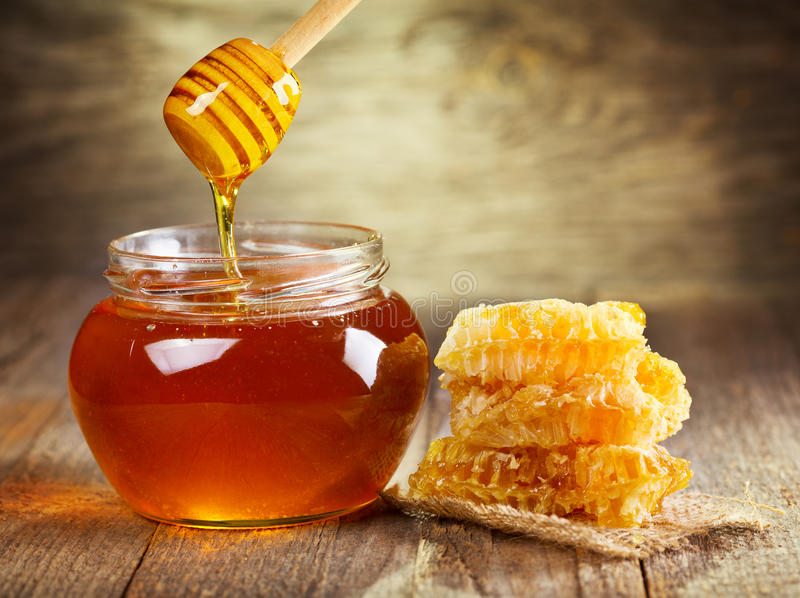

Alimentos naturales
Pistachos

| Nombre | Cantidad |
|---|---|
| Agua | 4.37 g |
| Calorías | 560 Kcal |
| Proteínas | 20 g |
| Grasas Totales | 45 g |
Los frutos secos, como los pistachos, son una parte integral de una dieta saludable. No sólo son naturalmente bajos en sodio y azúcar, sino que los pistachos son reconocidos por su impacto positivo en la salud del corazón, el peso y el control del azúcar en la sangre.
Miel
| Nombre | Cantidad |
|---|---|
| Agua | 17 g |
| Calorías | 304 Kcal |
| Proteínas | 0.3 g |
| Grasas Totales | 0 g |
| Azucares | 82 g |
La miel tiene propiedades antibióticas y antibacterianas, ayudando a evitar infecciones, gripes y resfriados. El agua con miel en ayunas es un excelente remedio para aumentar las defensas y prevenir una gran cantidad de enfermedades.